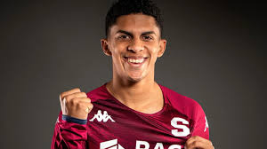

📅 29 Mayo 2026
Por Carlos José Villanueva Ramos

El Deportivo Saprissa confirmó oficialmente que el atacante Rachid Chirino jugará a préstamo durante un año con el recién ascendido Inter de San Carlos.
Chirino llegó al Monstruo Morado en 2024 y tuvo un paso por la Asociación Deportiva San Carlos, donde tuvo una destacada temporada que le abrió las puertas de regreso a Saprissa. Durante su etapa con la institución morada disputó 29 partidos oficiales y anotó en 3 ocasiones.
El club agradeció al jugador por su profesionalismo y le deseó éxitos en esta nueva etapa. ¡Mucha suerte Rachid! 💜
← Volver al Blog Morado